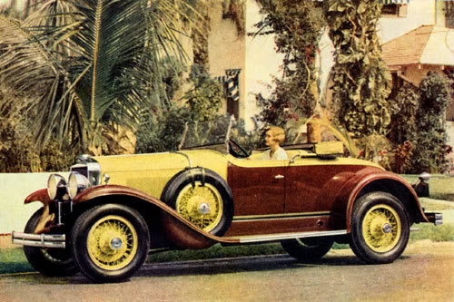

Driving an oldtimer from the 1920s can be a perilous endeavor. Differences in technology between the 1920s and the 21. century make it difficult for people who are used to modern cars to estimate the necessary stopping distance of their oldtimer. The Safe Gatsby provides you with an estimate of the stopping distance given the velocity of yout oldtimer based on a statistical model.
